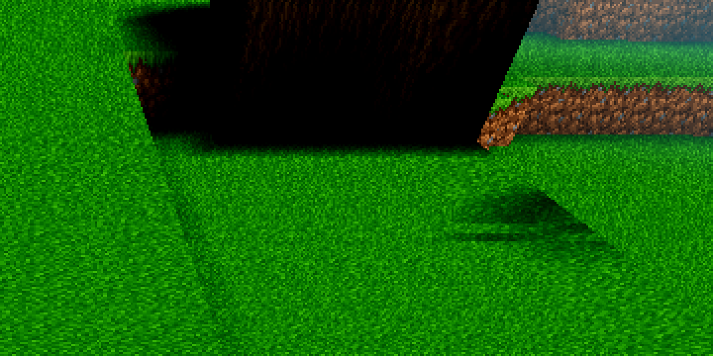
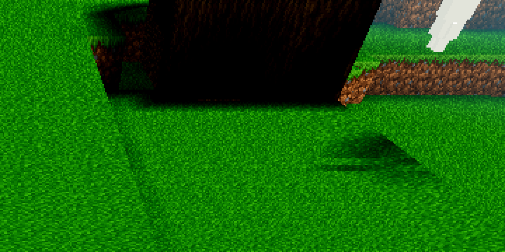

Seed 44, r4, the user's view (spawn pose, chunk (0,−1) seam). Defect: the tree's faces along the seam render pure black while the open ground 200 px away renders bright.
The original UV→texel hypothesis is refuted: the slab-8 mesh of (0,−1) is
complete (live == fresh, 343 = 343 quads; all 67 scan-decided trunk faces present, incl. the
12 seam-V-extended +x faces at x≈16.6), the UVs are plain-atlas-space and correct, and the
bound texture (ShaderMaterial param tex, 1024²) holds the right pixels at those
UVs (grass top (56,108,33,255), log side (116,90,54,255)). A tf=400 ray probe in the
render world confirms it at the snapshot frame: every blob ray finds its quad within
d<0.7 of the first solid cell. Geometry and texels are exonerated in both worlds.
The vertex-color R channel carries the sky-light scalar s (clamped [20/255, 1] at mesh
time). Every blob-region face sits at the floor (R = 0.0784, G = 0.0) — the
canopy's leaves occlude the sky pull for the trunk cells and the grass tops the crown
overhangs — while the open-ground faces 200 px away are at R = 1.0. The
shader is ALBEDO = t.rgb * COLOR.b * L,
L = 0.20 + 0.80·max(u_day·R, G): floor faces render at L = 0.2627, sunlit faces
at L = 1.0; after the tonemap, bark × 0.5647 shade × 0.26 lands at (0,0,0)–(0,23,0) on
screen. The (0,0,0) blob pixels are those floor-rendered faces plus space sky seen through
the canopy's cutout holes and grazing gaps. The split is sky exposure: faces
whose column the sky pull reaches are bright; faces under the crown are black — same mesh,
same frame, same texture, only the light scalar differs. Same trunk, same slab: the
seam-extended +x face at x=16.6 (sky-exposed) renders bright green-brown, its floor-lit
siblings render black.
AC-0426 had measured and shipped exactly this lift as Settings ambient_sky
(pushed as u_amb; L += u_amb·u_day·step(m_direct, 0.08) — the step
fires only on floor faces, so sunlit faces are bit-identical at any hour; 0.0 at
night), but it defaulted OFF. The fix: godot/autoload/settings.gd —
"ambient_sky": true (default ON; comments refreshed in settings.gd and
world.gd). At noon the floor faces go L 0.2627 → 0.6127 (AMB_SKY_L = 0.35, the AC-0426
value: "dark brown, readable as bark, in-the-shade not in-the-hole"; sunlit neighbours
untouched). Colour-only push — no mesh, no bake, no data. AWECRAFT_AMBSKY=0 and
the saved setting restore the OFF look per process / per user. No C++ change: the mesher is
exonerated; all temporary debug code (harness.gd arm, world.gd tf=400 audit, mesh.cpp dbg
hooks) was removed and the .so rebuilt + copied to godot/bin.
Per-face census at the blob: every quad of the tree region (62 faces, slabs 8/9 of (0,−1)) projected to screen at the snapshot frame, 5 sample points per face; a face counts pure-black when ≥4 of 5 points are exactly (0,0,0).
| metric | before (AMBSKY=0) | after (default ON) |
|---|---|---|
| faces in census | 62 | 62 |
| pure-black faces (≥4/5 pts (0,0,0)) | 27 | 15 |
| near-black faces (all pts ≤8) | 26 | 15 |
| blob bbox (x 680–920, y 0–80) pure-black pixels (4800 samples) | 2449 (51.0%) | 2130 (44.4%) |
Un-occluded faces visibly lift — e.g. a grass-top face's samples go
(0,0,0)×5 → (21,7,0),(0,0,0),(10,0,0),(22,7,0),(0,17,0) (dark green-brown
texture, the AC-0426-calibrated "in the shade" look); the trunk base at (725,10) goes
(0,0,0) → (26,10,0). The 15 residual pure-black faces are the ones whose sample points sit
under nearer canopy leaf-holes (the (0,0,0) there is space sky through the cutout,
not an unlit face — the floor-lit leaf in front and the hole are unchanged geometry, and a
lifted face cannot sample (0,0,0) at a non-zero texel). The blob's remaining black is that
sky-through-canopy class, which is correct rendering, not the defect.


PROBE (ac0432uv arm, final run): ok: true over 32,165 checks —
defect_fullylit_empty: 0, empty_partial: 0 (zero fully-lit quads
sampling black/empty texels — the foreign-texel and the black-lava-quad classes are absent);
flora census: 864/864 leaf quads sample the leaf tile (UV-centre (336,16) is an a=0 hole —
the cutout working as designed; probe texels grass (56,108,33,255), leaf (28,64,22,255),
leaf hole (28,64,22,0)); slab-8 live == fresh (343 = 343) with correct UV→texel mapping.
tasks/scripts/gate_census.py + exit status)| gate | rc | census | result |
|---|---|---|---|
| G0, clean tree (post-strip) | 0 | 0 / 0 | pass |
| G0, PROBE arm run | 0 | 0 / 0 | pass |
PROBE ac0432uv | 0 | — | ok true (32,165 checks), defect 0/0 |
SMOKE battery player;interact;light;fluids;genhash | 0 | 0 / 0 | ok true — player (jump_peak_y 142.42, on_floor, col_deferred 0), interact (drop+place), light (15/0/14, far 0→9), fluids (sea stable), 260 s |
| genhash 25/25 | (in battery) | — | 25/25 identical vs the AC-0425 reference set; (0,0) = 46c20b07c95cb03b57772e1531c97f71 — mesher byte-identity holds |
| acceptance renders (before5/after5, lavapipe r4) | 0 / 0 | 0 / 0 each | snapshots written + verified present |
shaderforce: not run — the shader is unchanged (ticket condition: only if a shader changes). HEAVY gates (boundary r4, farab, ladder, halo, lightstate, r16, full battery) are the coordinator's; the change is a colour-only uniform push (no mesh/bake/data), so the standing values it could move are the look-level ones — flagging for the coordinator's heavy pass.
starlight.cpp (fenced, test-only anyway)
computes the sky pull; the canopy occlusion is the light model working as designed — the
defect was that the measured mitigation shipped off.Journal: tasks/AC-0432/continuity.md (full probe chronology, incl. the
refuted UV theory and the coordinate-space traps hit along the way). Plan:
tasks/AC-0432/plan.html (mechanism section updated). Scratch logs:
.scratch/AC-0432/ (arm-top1…19, render-probe1, render-amb1/2,
render-before5/after5, smoke-final, g0-final).